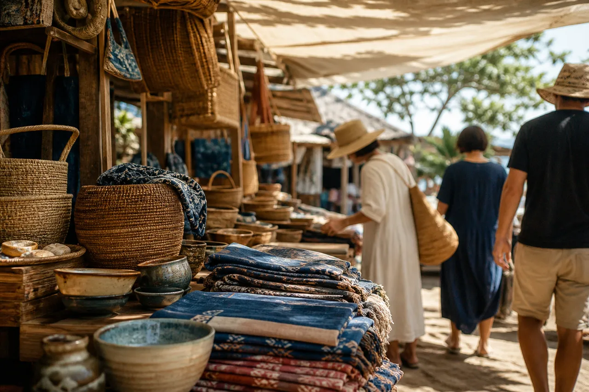
市場の朝を、そのまま持ち帰る
朝いちばんの市場は、まだ日が低くて、布と草の匂いがします。売り台に積まれた籠は、どれも大きさがそろっていません。
作り手に聞くと、その日の材料で編める分だけ編むのだと言います。だから同じものは二つとない。その不揃いを、そのまま届けます。
ひととき雑貨店暮らしの道具を、少しずつ。
わが家に、島の風を。
暮らしをめぐる
島の市
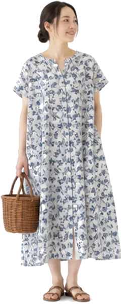
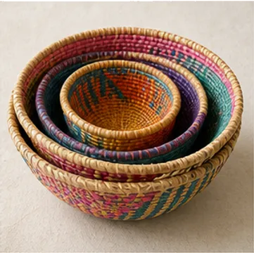
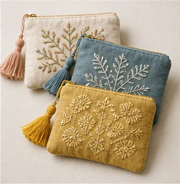
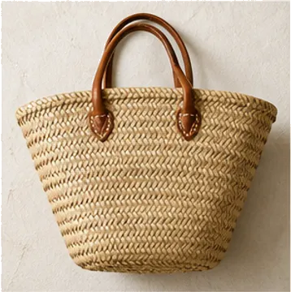
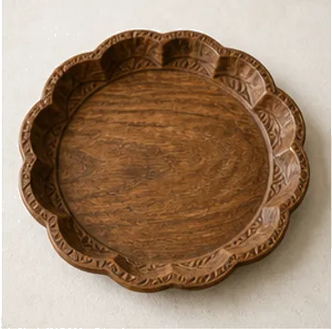
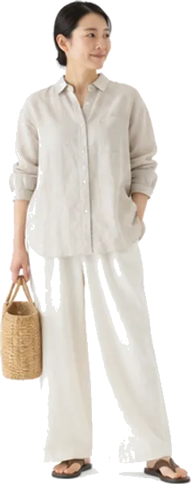
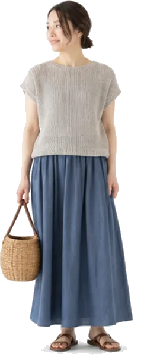
数量限定
島の空気を、
わが家にそっとひとさじ。
整いすぎていない、
そのくらいがちょうどいい。
いつもの場所を、旅先に。
島のレシピ
そろいすぎない心地よさ
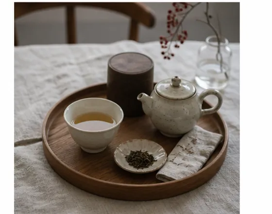
同じ形が並んでいると、部屋はきれいに見えます。 でも、少し歪んだ器や、色の揃わない布が一つ混ざると、その部屋は急に自分のものになります。
島の道具は、どれも同じには作れません。編み目のゆらぎも、染めのむらも、作った人の手の跡です。 まずは小さなものを一つ、いつもの棚に置いてみてください。

朝いちばんの市場は、まだ日が低くて、布と草の匂いがします。売り台に積まれた籠は、どれも大きさがそろっていません。
作り手に聞くと、その日の材料で編める分だけ編むのだと言います。だから同じものは二つとない。その不揃いを、そのまま届けます。
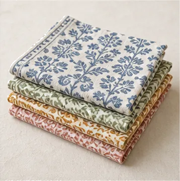
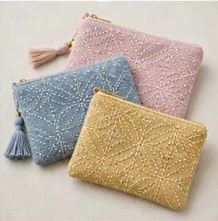
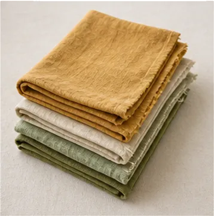
季節がひとめぐりするあいだ、少しずつ入れ替えていきます。